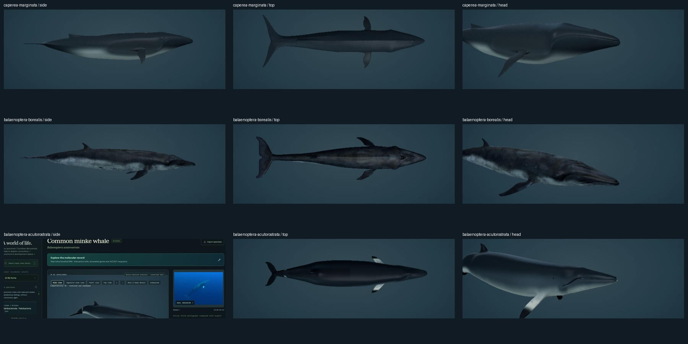
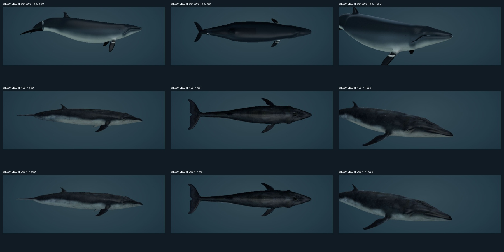
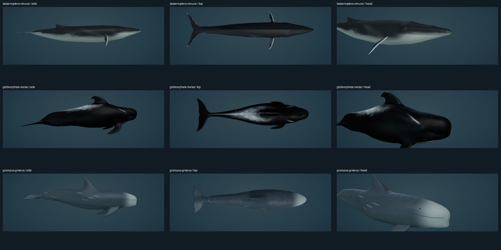
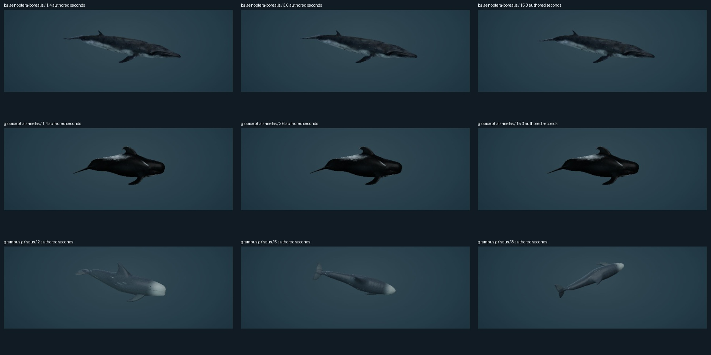

← Open the archivePHENOVOXEL ARCHIVE / SOURCE-MODEL REVISION / 5 NOVEMBER 2026
First-batch whale and dolphin corrections
Nine archive species and ten display profiles now use edited artist source surfaces. The Sei, southern minke and pilot sources are the requested downloadable models. Omura uses the existing supplied fin-whale source. Where a linked mesh was not downloadable, its visible shape guides a separately credited licensed derivative, as agreed.
These are textured artist reconstructions. They are not photographic scans, fitted individuals or independently certified anatomy. Native source texture detail ranges from about 1K to 4K; larger delivered maps include authored corrections and do not recover missing photographic detail. Feeding mechanics and full physiology remain unimplemented.
What changed
| Species | Body, skin and study changes | Imported source |
|---|
| Pygmy right whaleCaperea marginata | Woelper source surface sculpted toward the linked pygmy-right-whale reference: arched jaw, shortened broader pectorals, smaller posterior dorsal fin, smooth countershading and no right-whale callosity pads. The linked Paddlefish_MSM mesh was not downloadable. Requested guide · Biological account | Johann Woelper
CC BY-NC 4.0
53,936 triangles |
| Sei whaleBalaenoptera borealis | The requested Bohdan Lvov Sei source supplies the connected body and UV layout. Two Loop refinements soften the silhouette. Edited skin keeps its artist mottling and fine surface detail; propulsion is newly authored on the neutral surface. Requested guide · Biological account | Bohdan Lvov (ostapblendercg)
CC BY 4.0
32,352 triangles |
| Common minke whaleBalaenoptera acutorostrata | A separate, slimmer, straighter common-minke derivative of Bill Nguyen’s source, guided by the linked Vågehval model. Replacement body and appendage charts isolate its northern-type white pectoral bands from the dorsal fin and flukes. Requested guide · Biological account | Bill Nguyen (bill_nguyen)
CC BY 4.0
25,792 triangles |
| Antarctic minke whaleBalaenoptera bonaerensis | A separate, deeper Antarctic-minke derivative of the requested southern-minke surface. Dark pectorals, revised countershading and a shorter selected ventral-groove field distinguish it from the common minke. Northern-type pectoral bands are absent. Requested guide · Biological account | Bill Nguyen (bill_nguyen)
CC BY 4.0
25,792 triangles |
| Rice's whaleBalaenoptera ricei | Derived from the requested Sei surface, with a broader head/body, three rostral ridges and revised mouth/ventral pigment. Rice’s whale has symmetric lower-jaw colour here; Omura-style jaw asymmetry is not assigned to it. Requested guide · Biological account | Bohdan Lvov (ostapblendercg)
CC BY 4.0
32,352 triangles |
| Bryde’s / Eden’s whaleBalaenoptera edeni | The non-downloadable catfishyay Bryde model is a visual guide. A licensed Sei derivative supplies the surface, edited for three rostral ridges, fuller proportions and revised ventral skin. Both existing coastal Eden/offshore Bryde display choices remain; they do not resolve the disputed taxonomic boundary. Requested guide · Biological account | Bohdan Lvov (ostapblendercg)
CC BY 4.0
32,352 triangles |
| Omura's whaleBalaenoptera omurai | Uses the existing Woelper fin-whale source as requested, with a separate slender-body/pectoral sculpt, a pale right and dark left lower jaw, muted right-side blaze/chevrons and pale pectoral leading edges. Normalized display size is not a measured adult length. Requested guide · Biological account | Johann Woelper
CC BY-NC 4.0
53,936 triangles |
| Long-finned pilot whaleGlobicephala melas | The requested allthingsaurus surface and its skin atlas supply the body. The original clips are replaced by stable neutral pectorals and new posterior/fluke deformation. Roste’s non-downloadable Grindhval is a shape reference; its mesh was not extracted or combined. Requested guide · Biological account | allthingsaurus
CC BY 4.0
23,844 triangles |
| Risso's dolphinGrampus griseus | A licensed Risso-specific surface by ivan.geraldo replaces the pilot-derived draft. Major’s linked model is the visual guide. Revised selected adult pigment, pale snout, grouped rake scars and inset eyes accompany swimming, gliding and the selected right-sided spin-dive study. Requested guide · Biological account | ivan.geraldo
CC BY 4.0
14,817 triangles |
Actual viewer captures
Side, top and head views from the archive’s compatibility renderer. Lighting, camera and display scale are illustrative. Images show the delivered geometry and skin, not reference photographs.

Group 1: three animals, each from side, top and head viewpoints. Per-model creator/license credits are listed above.
Group 2: three animals, each from side, top and head viewpoints. Per-model creator/license credits are listed above.
Group 3: three animals, each from side, top and head viewpoints. Per-model creator/license credits are listed above.Movement checks
Posterior bending drives horizontal flukes dorsoventrally. The anterior body and pectorals remain stable during strokes; glide transitions finish in a held posture. The old imported clips are not used for the pilot. The controller now reads interleaved glTF attributes correctly, so motion does not overwrite UVs or normals.

Sei and pilot: 1.4,3.6 and15.3 authored seconds. Risso: 2,5 and8 authored seconds. These are selected exterior poses, not measured trajectories.The Risso study uses a selected 120° right-side roll and nose-down posture, inspired by a tag study of seven adults in the Azores. It is not a universal dive pattern. Primary study.
Evidence and limits
The source-linked biology cards retain species diet, respiration, locomotion and mitochondrial evidence. No oxygen, blood flow, metabolism, baleen filtration or DNA-to-phenotype simulation is inferred from these exteriors. Historical FAO illustrations support exterior comparisons; current taxonomy and conservation status do not come from those 1993 accounts.
Checks cover finite geometry, delivered-file hashes, distinct minke surfaces and pectoral markings, UV/connectivity preservation, continued swimming, held glides, reset behavior and pilot flipper stability. The remaining332 species records, reference-photo identities, occurrence decisions and deposited molecular evidence are preserved.
Source-model licenses apply to the edited surfaces and renderings. Caperea and Omura derivatives retain Johann Woelper’s CC BY-NC4.0 grant. The review sheets containing them include those noncommercial elements. Other listed source surfaces retain CC BY4.0. Original code is MIT.